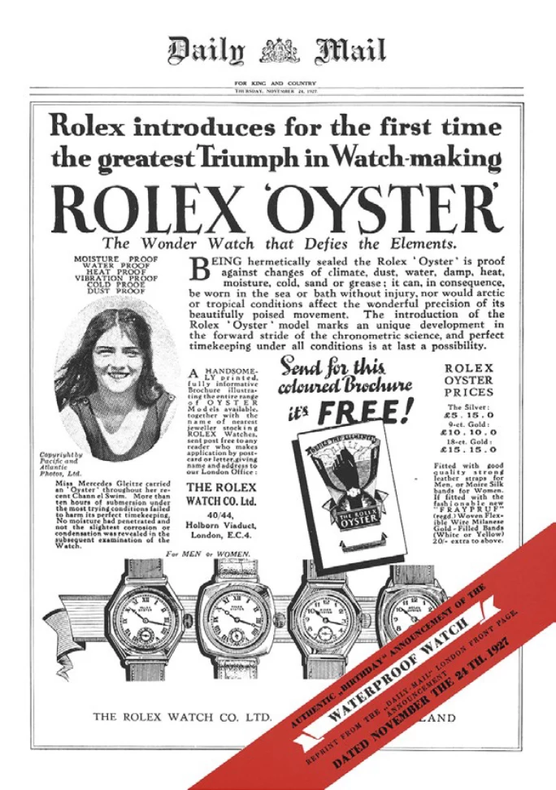
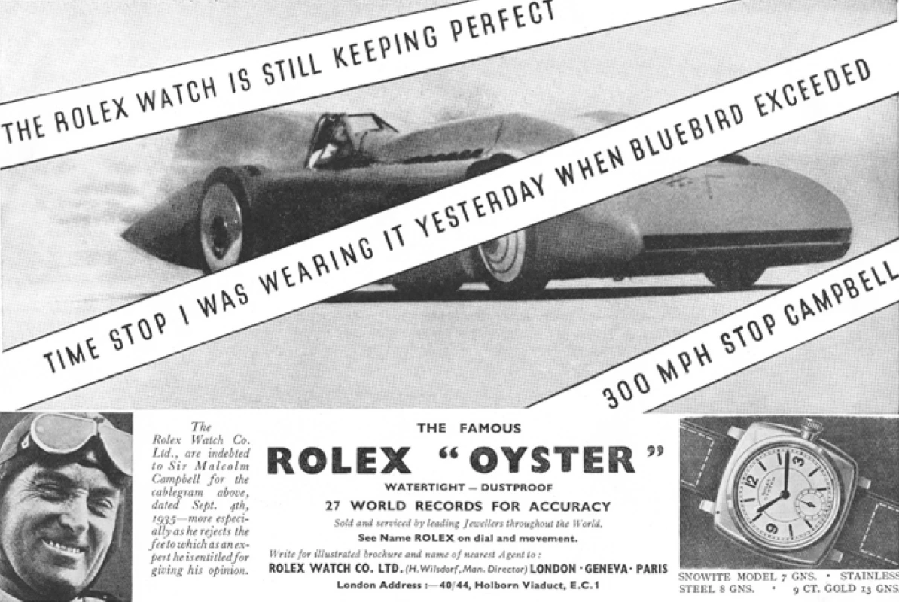
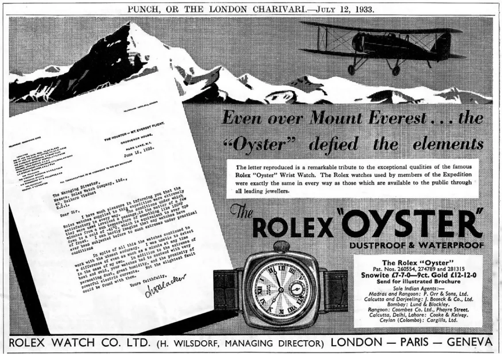
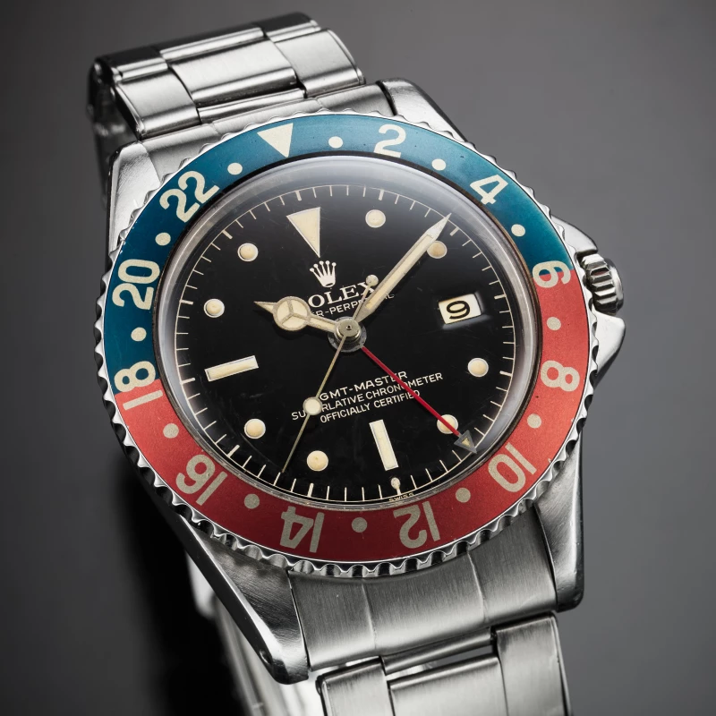
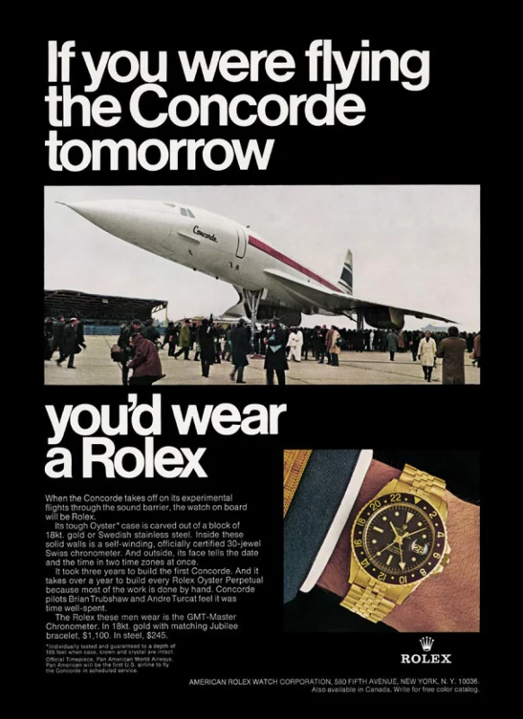
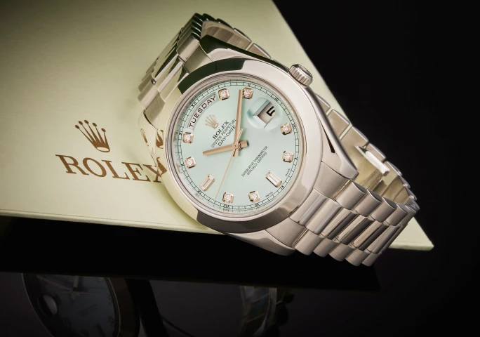
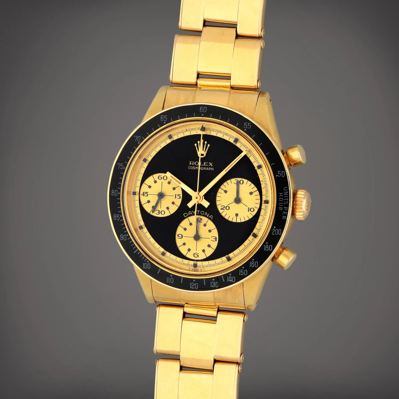
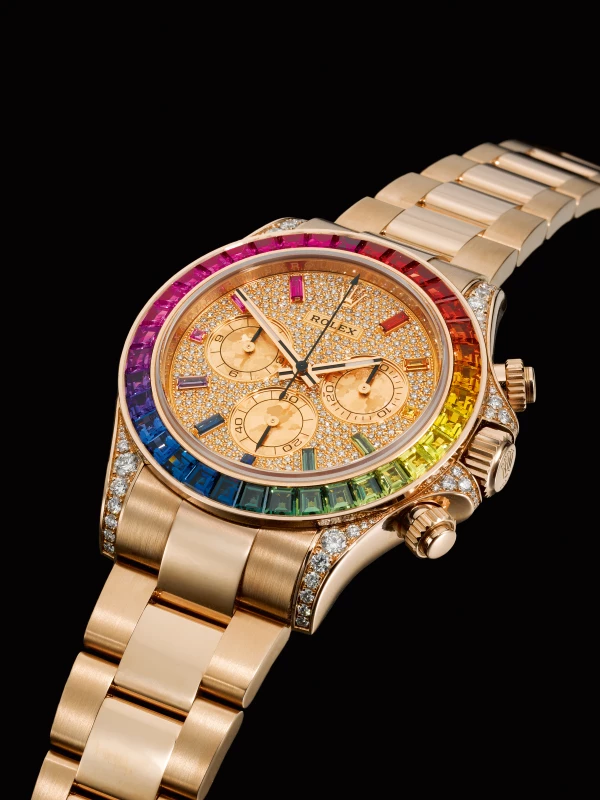

譯自 Stephen Pulvirent · Sotheby's
勞力士，藏家心之所向，始於此，亦終於此。如欲探尋此傳奇腕錶的奧秘，些許知識便足以引路。
勞力士歷程 | 勞力士經典錶款
論及當代製錶工藝及收藏文化，勞力士可謂獨領風騷。百年光陰倏忽而過，「ROLEX」五個字母早已化為瑞士頂級機械腕錶的代名詞，其聲名遠播，不僅為愛錶人士所津津樂道，更融入當代文化的方方面面。勞力士始終秉持對品質、工藝及設計的至臻追求，使其成為全球最受歡迎的奢華腕錶品牌。「Submariners」、「Datejusts」、「Daytonas」，款款經典，一錶難求，往往需排隊等候。不過，如若您選擇於二手市場尋覓珍寶，蘇富比亦可助您一臂之力。我們的全球專家團隊精心甄選各式勞力士腕錶，於世界各地的拍賣會及網上平台靜候您的光臨。
「你可以帶不同品牌的腕錶潛水，但我相信在浩瀚無際的深海之中, 你會發現許多不同的勞力士腕錶。」
—— 蘇富比全球鐘錶部主管 Geoff Hess
「勞力士收藏群體是如此活躍強韌，擴及全球。我是出生紐約，在紐約長大的都市人，但因為收藏勞力士腕錶， 使我廣結善緣，在全球各大城市都有朋友願留我做客。」世界級頂尖勞力士專家，蘇富比全球鐘錶部主管Geoff Hess說道。
毋庸置疑，自 20 世紀初至今，每款勞力士腕錶皆是收藏佳品，其背後故事引人入勝，令人孜孜以求，不斷探索腕錶收藏的無限可能。只需略窺當中歷史，了解其經典之作，再加上蘇富比的專業建議，您便可自信踏入這迷人的腕錶世界。
勞力士歷程與瑞士鐘錶的源起
勞力士富有悠久神秘的歷史，這引人思索的迷人魅力吸引到無數藏家。「你可以帶不同品牌的腕錶潛水，但我相信在浩瀚無際的深海之中, 你會發現許多不同的勞力士腕錶。如果你願意投入勞力士的世界來研讀歷史，從錶迷間相互學習，並了解到鐘錶學的知識，那你將體悟無上的喜悅。」蘇富比全球鐘錶部主管 Geoff Hess 說道。
1905 年，年僅 24 歲的漢斯·威爾斯多夫（Hans Wilsdorf）在倫敦創立了一家腕錶經銷公司。當時懷錶盛行，但威爾斯多夫卻獨具慧眼，預見腕錶的時代即將來臨，並成為其早期倡導者和銷售商。據說幾年後的一個清晨，在馬車的輕快節奏中，「勞力士」這個名字應運而生。不久之後，勞力士打造出一些最早獲得天文台認證的天文台精密時計腕錶，其精準度傲視同儕。
「『魔鬼藏在細節裡』，這句話來描述勞力士收藏， 實在貼切不過。」
—— 蘇富比全球鐘錶部主管 Geoff Hess

勞力士於 1926 年推出蠔式錶殼，並於 1931 年推出「Perpetual」自動上鏈系統。
威爾斯多夫的公司不斷推陳出新，對 20 世紀製錶業的影響不可估量。1926 年，勞力士推出蠔式錶殼，其旋入式錶冠及卓越的防水性能令人驚嘆。1931 年，「Perpetual」自動上鍊系統問世，免除了手動上鍊的繁瑣。1945 年，勞力士「Datejust」以其日期顯示功能，革新日常佩戴腕錶的設計。而這一切，僅僅是勞力士輝煌創新史的序章。
許多藏家認為，勞力士的輝煌歲月始於 1950 年代，並一直持續到 70 年代。這段時期誕生了許多經典錶款，例如「Submariner」（1953 年）、「GMT-Master」（1954 年）、「Explorer」（1963 年）和「Daytona」（1963 年）。如今，無論討論哪個時代的腕錶，這些錶款始終是勞力士收藏的基石，屹立不倒。此外，勞力士還推出了 「Milgauss」（1956 年）和「Explorer II」（1971 年）等風格獨特的錶款。雖然這些錶款曾一度默默無聞，現在也擁有一眾忠實擁躉。
製錶工藝日新月異，80 年代和 90 年代，材質運用和電腦輔助設計的革新，推動勞力士的演變。五位數型號，如「GMT-Master II 16710 型號」、「Submariner 16610 型號」、「Submariner 14060 型號」以及「Daytona 16520 型號」，搭載全新機芯、無輻射夜光錶盤、藍寶石水晶鏡面等，堪稱第一代名副其實的現代勞力士腕錶。近年來，它們的收藏價值扶搖直上，與前輩經典款式並駕齊驅。


左：1930 年代，馬爾科姆·坎貝爾爵士（Sir Malcolm Campbell）佩戴著勞力士「Oyster」腕錶，打破陸上速度紀錄，時速高達 300 英里。右：1933 年，斯圖爾特·布萊克（Stewart Blacker）佩戴勞力士「Oyster」腕錶，駕駛飛機首次飛越珠穆朗瑪峰。
蘇富比副總裁、數碼策略總監兼鐘錶部專家 Vincent Brasesco 曾言：「每枚勞力士都蘊藏著無盡的靈感源泉。勞力士多年前的一則廣告令人印象深刻：『它不僅記錄時間，更記錄歷史。』這句話精闢概括了勞力士的精髓。還有哪一款腕錶，能同時被太空人、運動員、探險家和銀幕偶像所鍾愛？我們大概永遠無法親身經歷沉船救援，但我們可以擁有那枚參與其中的腕錶。這正是勞力士的魅力所在。」
勞力士經典錶款
「收藏勞力士就等於深陷在學問中，學無止境。其深度幾乎可媲美學習藝術史。你可以花上十年時間來研究特定款的勞力士型號，但依舊只能了解到皮毛而已。『魔鬼藏在細節裡』，這句話來描述勞力士收藏， 實在貼切不過。」
勞力士締造無數傳奇錶款，每一款都演繹出千變萬化的風采，令人目不暇給。以下精選幾款備受矚目的勞力士腕錶，邀您一同品鑒。
「還有哪一款腕錶，能同時被太空人、運動員、探險家和銀幕偶像所鍾愛？」
—— 蘇富比鐘錶部專家 Vincent Brasesco
想入手勞力士，卻又不想漫長等候？蘇富比是您的最佳選擇。
勞力士「Submariner」潛水腕錶
「Submariner」，簡稱「Sub」，辨識度極高。這款腕錶堪稱潛水錶的鼻祖，影響深遠，無論過去還是現在，都為同系列錶款樹立典範。作為一款專為軍事和休閒潛水員設計的水底工具錶，「Submariner」配備清晰易讀的指針和夜光刻度，以及旋轉計時錶圈。黑色錶盤一直以來最受歡迎，不過品牌多年來也陸續推出綠色（Kermit、Starbucks、Hulk）和藍色（Bluesy、Smurf）等多種配色錶盤和錶圈。這也帶出了一個勞力士買家必須了解的重要傳統：使用暱稱來區分心儀款式。
「Submariner」問世不到十年，便在 1962 年的《第七號情報員》中，伴隨尚・康納利（Sean Connery）亮相，從此奠定其在流行文化中的不朽地位。早期型號，例如 007 佩戴的 6538 型號（錶迷暱稱其為「大錶冠」），如今已成收藏界的夢幻逸品，價值連城。而「Submariner」的魅力恆久不衰之處，在於從這些聖盃級錶款到現行的 124060 型號，每一款都秉持著相同的精神。總有一款「Submariner」，能與您的收藏完美契合。
聖盃級珍品：早期「Submariner」，如 6538 型號和 6200 型號，以獨特的大錶冠和更顯粗獷的設計風格，分別被稱為「大錶冠 (Big Crown)」和「美式三明治（King Sub）」。
現代經典：16610 型號等「新復古」款式，將復古設計與現代材質和工藝相結合，是介於復古與現代「Submariner」之間的完美選擇。
經典傳承：現款無日期「Submariner 124060 型號」，搭載全新錶殼尺寸和尖端機芯，一錶難求，零售店等候名單綿延不絕，在拍賣市場上更是備受追捧。
勞力士 GMT-Master
再深入探尋收藏的秘境，便會邂逅「GMT」，其絢麗的 24 小時錶圈，可追蹤另一個時區的時間。（藍紅錶圈贏得「百事可樂」的暱稱，此外還有「可口可樂」、「雪碧」、「沙士」等以汽水命名的款式，以及「蝙蝠俠」和「蝙蝠女」等更具個性的選擇。）翱翔天際，只需輕轉錶圈，將正確的小時與 24 小時指針對齊，即可輕鬆掌握目的地時間。這項格林威治標準時間（GMT）複雜功能，正是勞力士為泛美航空打造的獨特設計，為長途飛行提供精準計時。這些腕錶曾伴隨泛美航空的早期洲際航班，包括 1968 年紐約至莫斯科的歷史性首航，並與紐約市的環球航空航廈和協和號客機一樣，成為噴射機時代的標誌。


勞力士為泛美航空的飛行員設計了格林威治標準時間（GMT）複雜功能，以滿足長途飛行的計時需求。「GMT-Master」腕錶旋即成為噴射機時代的象徵。
聖盃級珍品：第一代「GMT 6542 型號」，採用人造樹膠材質，打造藍紅雙色 24 小時刻度錶圈。由於人造樹膠略帶輻射，在後續的維修保養中，這些錶圈多被換成鋁質錶圈，令原裝人造樹膠錶圈版本彌足珍貴。
現代經典：16760 型號首次搭載可跳時功能的時針，佩戴者可以更輕鬆追蹤第三個時區（主時針、可調節的 24 小時指針和錶圈分別指示三個時區），也標誌著「GMT-Master II」的誕生。
經典傳承：「蝙蝠俠」（116710BLNR 型號）憑藉黑藍錶圈和蠔式或紀念型錶帶，成為最受歡迎的「GMT」之一。
勞力士 Day-Date
「Day-Date」與其他勞力士腕錶風格迥異，更顯優雅莊重，但同樣堅固耐用。令人難以置信的是，這款誕生於 1956 年的腕錶，是全球首款同時顯示日期和完整星期拼寫的腕錶。這項創舉也為勞力士的輝煌歷史增添了濃墨重彩的一筆。

這款勞力士「Day-Date」腕錶配備蒂芙尼藍錶盤和鑽石時標。
「Day-Date」款式繁多，涵蓋鋼、金、鉑金等材質，搭配琳琅滿目的錶盤選擇。每一枚「Day-Date」都獨具特色，彰顯個人風格。多年來，世界各國領袖、影星和運動員，都曾佩戴這款腕錶，見證著時代變遷。而黃金「Day-Date」更是深受美國總統青睞，林登·約翰遜（Lyndon B. Johnson）、理查·尼克森（Richard Nixon）、隆納·雷根（Ronald Reagan）和比爾·克林頓（Bill Clinton）都曾佩戴這款腕錶，使其更添傳奇色彩。「總統錶」的美譽由此而來，實至名歸。
聖盃級珍品：「Day-Date」款式繁多，而最具收藏價值的，往往是那些身世不凡的錶款。它可能是特別定制的錶盤（例如帶有 Khanjar 標誌），也可能是名人佩戴過的珍品。極致品質與獨一無二，才是收藏的王道。
現代經典：在 70 年代到 90 年代中期，勞力士生產了少量配備繽紛色彩琺瑯錶盤的「Day-Date」，這些配備「Stella 」錶盤的腕錶自成一派，獨具收藏價值。
經典傳承：傳統「Day-Date」的錶徑為 36 毫米，如今也有 40 毫米的款式可供選擇。勞力士為此尺寸設計了許多獨特的錶盤款式，假以時日，亦必將成為藏家的新寵。
勞力士 「Daytona」
在勞力士的收藏世界中，「Daytona」無疑是皇冠上的明珠。它誕生於 1963 年，最初名為「Cosmograph Daytona」，如今簡稱為「Daytona」。這款計時碼錶配備三個小錶盤和錶圈上的測速計，專為賽車手設計（以佛羅里達州的迪通拿 24 小時耐力賽命名），代表勞力士運動腕錶的巔峰之作。如今，「Daytona」堪稱全球最受追捧的奢華運動腕錶，尤其是白色錶盤的「Daytona Panda」，更是世界錶壇最具辨識度的經典之作。


左：這款黃金「Cosmograph Daytona John Player Special」計時腕錶，在蘇富比創下勞力士腕錶最高成交價的紀錄。右：勞力士「Daytona Rainbow」是近年來最受追捧的腕錶之一。
藏家熱衷鑽研腕錶的每個細節，錶盤字體的細微變化或底蓋上的印記，都可能決定一枚腕錶是尋常之物，或是千載難逢的珍寶。
對許多藏家而言，「Daytona」的巔峰之作非「Paul Newman」莫屬。它以獨特的異國情調錶盤而聞名，小錶盤上飾有小方塊，並因著名演員兼慈善家保羅·紐曼（Paul Newman）佩戴而得名，完美融合腕錶收藏和流行文化。
聖盃級珍品：一枚極為珍貴的黃金「Daytona Paul Newman 『John Player Special』」（6241 型號），在蘇富比創下勞力士腕錶最高成交價的紀錄。
現代經典：1988 年，勞力士推出16520、16523 和 16528 等型號的「Daytona」，均搭載了改良的 Zenith El Primero 計時機芯（勞力士的首次嘗試）。這些機芯一直沿用至 2000 年左右，其五位數的型號均以 165XX 開頭。
經典傳承：「Le Mans Daytona 126529LN 型號」是為慶祝勒芒 24 小時耐力賽而打造。它採用白金材質，錶盤設計向昔日「Paul Newman」錶盤致敬，僅在 2023 至 24 年間生產，使其成為最具收藏價值的現代「Daytona」。
勞力士近 120 年的製錶歷史，為當代藏家提供了無數珍品，以上只是冰山一角。再看「Oyster Perpetual」，儘管風格經典，卻是勞力士最具玩味色彩的系列，擁有明快的色彩（例如已停產的黃色錶盤）和充滿奇思妙想的錶盤設計。從同樣經典的「Datejust」，到相對小眾的「Yacht-Master」和「Sky-Dweller」，勞力士的世界，尚有更多寶藏待您發掘。
「勞力士收藏群體是如此活躍強韌，擴及全球。」
—— 蘇富比全球鐘錶部主管 Geoff Hess